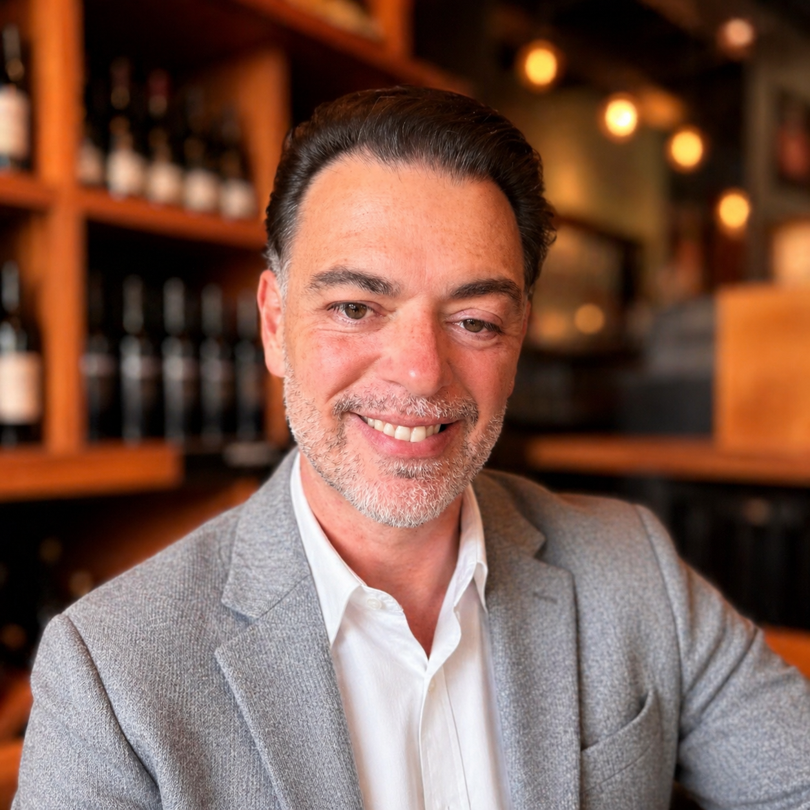

Background & Experience

Quick Facts
- 📍 Santa Barbara, CA
- 💼 VP, Cybersecurity & Network Ops — Aseva
- 🎓 B.S. Business Economics, UC Santa Barbara
- 🏆 Pacific Coast Business Times "40 Under 40"
- 📅 20+ years in tech leadership
Background
Chris Rose is a technology executive with over two decades of experience in operations management, company and product strategy, and high-touch customer management. He currently serves as Vice President of Cybersecurity and Network Operations at Aseva — a Santa Barbara–based technology services company he helped transform through a full rebrand in October 2025.
Throughout his career, Chris has worked alongside CIOs, IT directors, and business leaders to plan and deploy modern network and security environments. His approach combines deep technical knowledge with a proven ability to lead sales teams, manage vendor partnerships, and drive measurable revenue growth.
At Aseva
Chris leads teams responsible for network operations, client services, and cybersecurity strategy. He formulated and executed the company's product pivot toward cybersecurity sales and support — a transformation that included identifying new technology partners, redesigning the brand, and building new go-to-market strategies.
A hallmark of his approach: he established a private lounge in downtown Santa Barbara to connect with IT professionals, leading to direct conversations with over 50 CIOs and IT Directors. This community-first mindset is core to how Aseva operates.
Skills & Expertise
Leadership and business capabilities developed across 20+ years:
Vendor & technology knowledge:
Career Timeline
Over two decades building technology businesses and leading teams on the Central Coast of California.
- Formulated and executed company product strategies, including a pivot toward cybersecurity sales and support — directly contributing to a 15% increase in total company revenue.
- Managed technical teams including Service Implementation, Network Operations, and TAC; developed KPIs and eliminated departmental silos.
- Spearheaded discovery of new technology vendors and partners — evaluated and integrated SASE, MDR, and SD-WAN solutions into the product portfolio.
- Established a private lounge in downtown Santa Barbara to connect with IT professionals, leading to meetings with over 50 CIOs and IT Directors.
- Led the full company rebrand from Impulse Advanced Communications to Aseva in October 2025, including a new brandbook, website, and marketing materials.
- Oversaw the management of Client Services and Sales teams, driving sales, customer satisfaction, and retention for a growing portfolio of enterprise clients.
- Played a key role in product development, launching hosted PBX services via Broadsoft and integrating Webex into the UCaaS system.
- Managed the product catalog — overseeing all product pricing and negotiating vendor contracts across the full portfolio.
- Cultivated and maintained strong relationships with senior CIOs and IT directors across the client base.
- Developed and implemented sales strategies to expand market reach and increase revenue.
- Actively led the successful launch of a hosted VoIP service, contributing to a substantial 45% revenue increase.
- Expanded the company's geographic reach by opening offices in San Luis Obispo, Ventura, and Santa Monica.
- Led and trained sales teams to improve performance and consistently achieve targets.
- Oversaw sales operations, setting and achieving sales targets across the organization.
- Increased client base by 30% through targeted sales initiatives and strategic account development.
- Improved sales team productivity by implementing Salesforce.com CRM — a transformative change for the team's workflow and pipeline visibility.
- Launched a sales career by prospecting and closing broadband and hosting services to businesses on the Central Coast of California.
- Negotiated contracts, conducted product demonstrations, and successfully built a client base from the ground up.
- Developed the foundational skills in consultative selling, relationship management, and technical product knowledge that would define a 20+ year career.